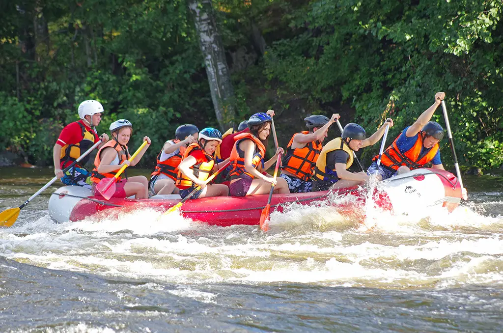
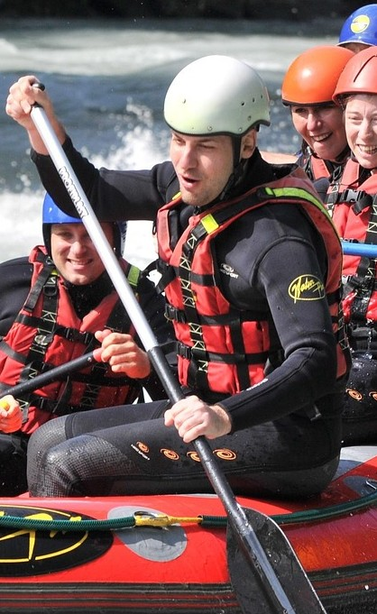
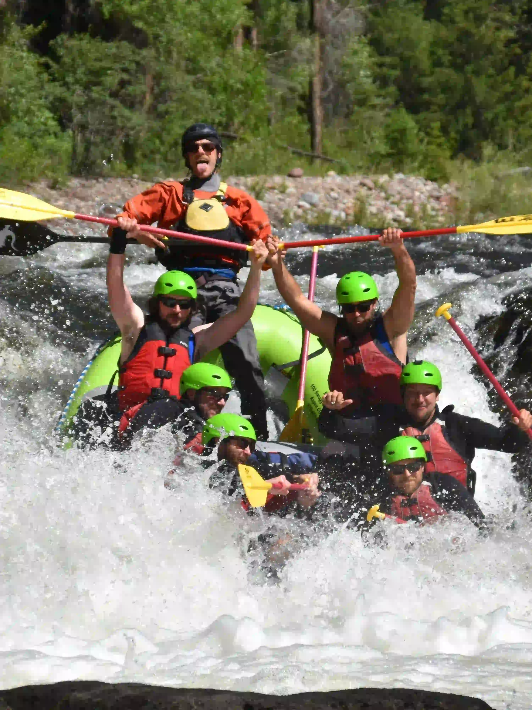

ABOUT US


John Snow (picture right) has always been drawn to fast‑moving water. What
began as
casual
weekend paddles turned
into a passion for sharing the thrill and calm of the river with others. After
years of guiding
small groups, he realised people weren’t just looking for adventure — they
wanted memorable moments.
With one raft, borrowed gear, and a commitment to doing things right, John
launched Rapids Rafting
Company. His focus was simple: safe equipment, skilled guides, and trips that
felt personal. What
started small has grown into a trusted operation, still driven by John’s
original goal of helping
people create unforgettable days on the water.
Our History

From a single raft on a quiet stretch of river to a full‑fledged
adventure operation, our story has
always been about bringing people together on the water. What started as a small
family passion
quickly grew as more and more locals—and eventually travellers from all over—came
looking for
something real, something memorable, something that pulled them out of the everyday.
Over the years, we’ve explored new routes, trained incredible
guides, and refined the experience
into what it is today: safe, exciting, and packed with moments you’ll talk about
long after you’re
back on dry land. Every trip we run carries a piece of that original spirit—simple,
honest adventure
shared with good people.